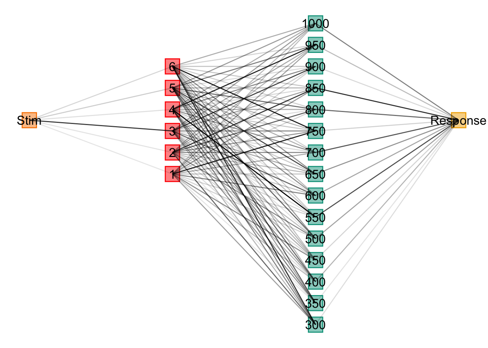

Simulating DeLosh 1997
Simulation
ALM
EXAM
R
Code
#https://nrennie.rbind.io/blog/2022-06-06-creating-flowcharts-with-ggplot2/
inNodes <- seq(1,6,1) %>% as.integer()
outNodes <- seq(300,1000,50)%>% as.integer()
stim <- "Stim"
resp <- "Response"
inFlow <- tibble(expand.grid(from=stim,to=inNodes)) %>% mutate_all(as.character)
outFlow <- tibble(expand.grid(from=outNodes,to=resp)) %>% mutate_all(as.character)
gd <- tibble(expand.grid(from=inNodes,to=outNodes)) %>% mutate_all(as.character) %>%
rbind(inFlow,.) %>% rbind(.,outFlow)
g = graph_from_data_frame(gd,directed=TRUE)
coords2=layout_as_tree(g)
colnames(coords2)=c("y","x")
odf <- as_tibble(coords2) %>%
mutate(label=vertex_attr(g,"name"),
type=c("stim",rep("Input",length(inNodes)),rep("Output",length(outNodes)),"Resp"),
x=x*-1) %>%
mutate(y=ifelse(type=="Resp",0,y),xmin=x-.05,xmax=x+.05,ymin=y-.35,ymax=y+.35)
plot_edges = gd %>% mutate(id=row_number()) %>%
pivot_longer(cols=c("from","to"),names_to="s_e",values_to=("label")) %>%
mutate(label=as.character(label)) %>%
group_by(id) %>%
mutate(weight=sqrt(rnorm(1,mean=0,sd=10)^2)/10) %>%
left_join(odf,by="label") %>%
mutate(xmin=xmin+.02,xmax=xmax-.02)
ggplot() + geom_rect(data = odf,
mapping = aes(xmin = xmin, ymin = ymin,
xmax = xmax, ymax = ymax,
fill = type, colour = type),alpha = 0.5) +
geom_text(data=odf,aes(x=x,y=y,label=label,size=3)) +
geom_path(data=plot_edges,mapping=aes(x=x,y=y,group=id,alpha=weight)) +
theme_void() + theme(legend.position = "none") 
Code
linear_function <- function(x) 2.2 * x + 30
exponential_function <- function(x) 200 * (1 - exp(-x/25))
quadratic_function <- function(x) 210 - (x - 50)^2 / 12
extrapLines <- list(geom_vline(xintercept=30,color="black",alpha=.4,linetype="dashed"),
geom_vline(xintercept=70,color="black",alpha=.4,linetype="dashed"))
linear_plot <- ggplot(deLosh_data$human_data_linear, aes(x, y)) +
geom_point(shape=1) + stat_function(fun = linear_function, color = "black") +
labs(y="Response Magnitude", title="Linear Function",x="") + extrapLines
exponential_plot <- ggplot(deLosh_data$human_data_exp, aes(x, y)) +
geom_point(aes(shape = "Observed", color = "Observed"),shape=1) +
stat_function(aes(color = "True Function"),fun = exponential_function, geom="line")+
labs(x="Stimulus Magnitude", title="Exponential Function",y="") +
extrapLines +
scale_shape_manual(values = c(1)) +
scale_color_manual(values = c("Observed" = "black", "True Function" = "black")) +
theme(legend.title = element_blank(), legend.position="top") +
guides(color = guide_legend(override.aes = list(shape = c(1, NA),
linetype = c(0, 1))))
quadratic_plot <- ggplot(deLosh_data$human_data_quad, aes(x = x, y = y)) +
geom_point( shape = 1) +
stat_function( fun = quadratic_function, geom = "line") +
labs(title="Quadratic Function",x="",y="") + extrapLines
linear_plot + exponential_plot + quadratic_plotALM Definition
Input Activation
\[ a_i(X)=\exp \left|-\gamma \cdot\left[X-X_i\right]^2\right| \]
Output activation
\[ o_j(X)=\Sigma_{i=1, M} w_{j i} \cdot a_i(X) \]
Output Probability
\[ P\left[Y_j \mid X\right]=o_j(X) / \Sigma_{k=1, L} o_k(X) \]
Mean Response
\[ m(X)=\Sigma_{j=1, L} Y_j \cdot P\left[Y_j \mid X\right] \]
Feedback Signal
\[ f_j(Z)=e^{-c\cdot(Z-Y_j)^2} \]
Weight Updates
\[ w_{ji}(t+1)=w_{ji}(t)+\alpha \cdot {f_i(Z(t))-O_j(X(t))} \cdot a_i(X(t)) \]
Input node actvation
\[ P[X_i|X] = \frac{a_i(X)}{\\sum_{k=1}^Ma_k(X)} \]
Slope Computation
\[ E[Y|X_i]=m(X_i) + \bigg[\frac{m(X_{i+1})-m(X_{i-1})}{X_{i+1} - X_{i-1}} \bigg]\cdot[X-X_i] \]
Generate Response
Toggle Code
alm.response <- function(input = 1, c, input.layer, output.layer,weight.mat) {
input.activation <- exp(-c * (input.layer - input)^2) / sum(exp(-c * (input.layer - input)^2))
output.activation <- weight.mat %*% input.activation
output.probability <- output.activation / sum(output.activation)
mean.response <- sum(output.layer * output.probability)
list(mean.response = mean.response, input.activation = input.activation, output.activation = output.activation)
}Update Weights Based on Feedback
Toggle Code
alm.update <- function(corResp, c, lr, output.layer, input.activation, output.activation, weight.mat) {
fz <- exp(-c * (output.layer - corResp)^2)
teacherSignal <- (fz - output.activation) * lr
wChange <- teacherSignal %*% t(input.activation)
weight.mat <- weight.mat + wChange
weight.mat[weight.mat < 0] = 0
return(weight.mat)
}
alm.trial <- function(input, corResp, c, lr, input.layer, output.layer, weight.mat) {
alm_resp <- alm.response(input, c, input.layer,output.layer, weight.mat)
updated_weight.mat <- alm.update(corResp, c, lr, output.layer, alm_resp$input.activation, alm_resp$output.activation, weight.mat)
return(list(mean.response = alm_resp$mean.response, weight.mat = updated_weight.mat))
}Exam Generalization
Toggle Code
exam.response <- function(input, c, trainVec, input.layer = INPUT_LAYER_DEFAULT,output.layer = OUTPUT_LAYER_DEFAULT, weight.mat) {
nearestTrain <- trainVec[which.min(abs(input - trainVec))]
aresp <- alm.response(nearestTrain, c, input.layer = input.layer,output.layer = OUTPUT_LAYER_DEFAULT,weight.mat)$mean.response
xUnder <- ifelse(min(trainVec) == nearestTrain, nearestTrain, trainVec[which(trainVec == nearestTrain) - 1])
xOver <- ifelse(max(trainVec) == nearestTrain, nearestTrain, trainVec[which(trainVec == nearestTrain) + 1])
mUnder <- alm.response(xUnder, c, input.layer = input.layer, output.layer, weight.mat)$mean.response
mOver <- alm.response(xOver, c, input.layer = input.layer,output.layer, weight.mat)$mean.response
exam.output <- round(aresp + ((mOver - mUnder) / (xOver - xUnder)) * (input - nearestTrain), 3)
exam.output
}Simulation Functions
Code
# simulation function
alm.sim <- function(dat, c, lr, input.layer = INPUT_LAYER_DEFAULT, output.layer = OUTPUT_LAYER_DEFAULT) {
weight.mat <- matrix(0.00, nrow = length(output.layer), ncol = length(input.layer))
xt <- dat$x
n <- nrow(dat)
st <- numeric(n) # Initialize the vector to store mean responses
for(i in 1:n) {
trial <- alm.trial(dat$x[i], dat$y[i], c, lr, input.layer, output.layer, weight.mat)
weight.mat <- trial$weight.mat
st[i] <- trial$mean.response
}
dat <- dat %>% mutate(almResp = st)
return(list(d = dat, wm = weight.mat, c = c, lr = lr))
}
simOrganize <- function(simOut) {
dat <- simOut$d
weight.mat <- simOut$wm
c <- simOut$c
lr <- simOut$lr
trainX <- unique(dat$x)
almResp <- generate.data(seq(0,100,.5), type = first(dat$type)) %>% rowwise() %>%
mutate(model = "ALM", resp = alm.response(x, c, input.layer = INPUT_LAYER_DEFAULT,output.layer = OUTPUT_LAYER_DEFAULT, weight.mat = weight.mat)$mean.response)
examResp <- generate.data(seq(0,100,.5), type = first(dat$type)) %>% rowwise() %>%
mutate(model = "EXAM", resp = exam.response(x, c, trainVec = trainX, input.layer = INPUT_LAYER_DEFAULT,output.layer = OUTPUT_LAYER_DEFAULT, weight.mat))
organized_data <- bind_rows(almResp, examResp) %>%
mutate(type = first(dat$type),
error = abs(resp - y),
c = c,
lr = lr,
type = factor(type, levels = c("linear", "exponential", "quadratic")),
test_region = ifelse(x %in% trainX, "train",
ifelse(x > min(trainX) & x < max(trainX), "interpolate", "extrapolate")))
organized_data
}
generateSimData <- function(density, envTypes, noise) {
reps <- 200 / length(trainingBlocks[[density]])
map_dfr(envTypes, ~
generate.data(rep(trainingBlocks[[density]], reps), type = .x, noise)) |>
group_by(type) |>
mutate(block = rep(1:reps, each = length(trainingBlocks[[density]])),
trial=seq(1,200))
}
simulateAll <- function(density,envTypes, noise, c = .2, lr = .2) {
trainMat <- generateSimData(density, envTypes, noise)
trainData <- map(envTypes, ~ alm.sim(trainMat %>% filter(type == .x), c = c, lr = lr))
assign(paste(density),list(train=trainData, test=map_dfr(trainData, simOrganize) %>% mutate(density = density)))
}Simulate Training and Testing
Code
envTypes <- c("linear", "exponential", "quadratic")
densities <- c("low", "med", "high")
noise=0
INPUT_LAYER_DEFAULT <- seq(0, 100, 0.5)
OUTPUT_LAYER_DEFAULT <- seq(0, 250, 1)
c = 1.4
lr=.8
results <- map(densities, ~ simulateAll(.x, envTypes, noise, c, lr)) |>
set_names(densities)
trainAll <- results %>%
map_df(~ map_df(.x$train, pluck, "d"), .id = "density") |>
mutate(stage=as.numeric(cut(trial,breaks=20,labels=seq(1,20))),
dev=sqrt((y-almResp)^2),
density=factor(density,levels=c("low","med","high")),
type=factor(type,levels=c("linear","exponential","quadratic"))) |>
dplyr::relocate(density,type,stage)
simTestAll <- results |> map("test") |> bind_rows() |>
group_by(type,density,model) %>%
mutate(type=factor(type,levels=c("linear","exponential","quadratic")),
density=factor(density,levels=c("low","med","high"))) %>%
dplyr::relocate(density,type,test_region)Training Data
Code
trainAll %>% ggplot(aes(x=block,y=dev,color=type)) + stat_summary(geom="line",fun=mean,alpha=.4)+
stat_summary(geom="point",fun=mean,alpha=.4)+
stat_summary(geom="errorbar",fun.data=mean_cl_normal,alpha=.4)+facet_wrap(~density, scales="free_x")
Predictions for Generalization
Code
simTestAll %>% ggplot(aes(x=x,y=y)) +
geom_point(aes(x=x,y=resp,shape=model,color=model),alpha=.7,size=1) +
geom_line(aes(x=x,y=y),alpha=.4)+
geom_point(data=simTestAll %>% filter(test_region=="train"),aes(x=x,y=y),color="black",size=1,alpha=1) +
facet_grid(density~type) +
theme_bw() + theme(legend.position="bottom")Collpasing Across Density Levels gives us:
Code
simTestAll %>% group_by(type,model,x,y) %>% summarise(resp=mean(resp)) %>% ggplot(aes(x=x,y=y)) +
geom_point(aes(x=x,y=resp,shape=model,color=model),alpha=.7,size=1) +
geom_line(aes(x=x,y=y),alpha=.4)+
facet_grid(~type) +
theme_bw() + theme(legend.position="bottom")Table
| Model & Definition | R Code |
|---|---|
| \(a_i(X)=\exp \left|-\gamma \cdot\left[X-X_i\right]^2\right|\) | exp(-c * (input.layer - input)^2) |
| \(o_j(X)=\Sigma_{i=1, M} w_{j i} \cdot a_i(X)\) | weight.mat %*% input.activation |
| \(P\left[Y_j \mid X\right]=o_j(X) / \Sigma_{k=1, L} o_k(X)\) | output.activation / sum(output.activation) |
| \(m(X)=\Sigma_{j=1, L} Y_j \cdot P\left[Y_j \mid X\right]\) | sum(output.layer * output.probability) |
| \(f_j(Z)=e^{-c\cdot(Z-Y_j)^2}\) | exp(-c * (output.layer - corResp)^2) |
| \(w_{ji}(t+1)=w_{ji}(t)+\alpha \cdot {f_i(Z(t))-O_j(X(t))} \cdot a_i(X(t)\) | lr *(fz - output.activation) %*% t(input.activation) |
| \(E[Y|X_i]=m(X_i) + \bigg[\frac{m(X_{i+1})-m(X_{i-1})}{X_{i+1} - X_{i-1}} \bigg]\cdot[X-X_i]\) | trainVec[which.min(abs(input - trainVec))]; xUnder <- ...; xOver <- ...; mUnder <- ...; mOver <- ...; exam.output <- round(aresp + ((mOver - mUnder) / (xOver - xUnder)) * (input - nearestTrain), 3) |